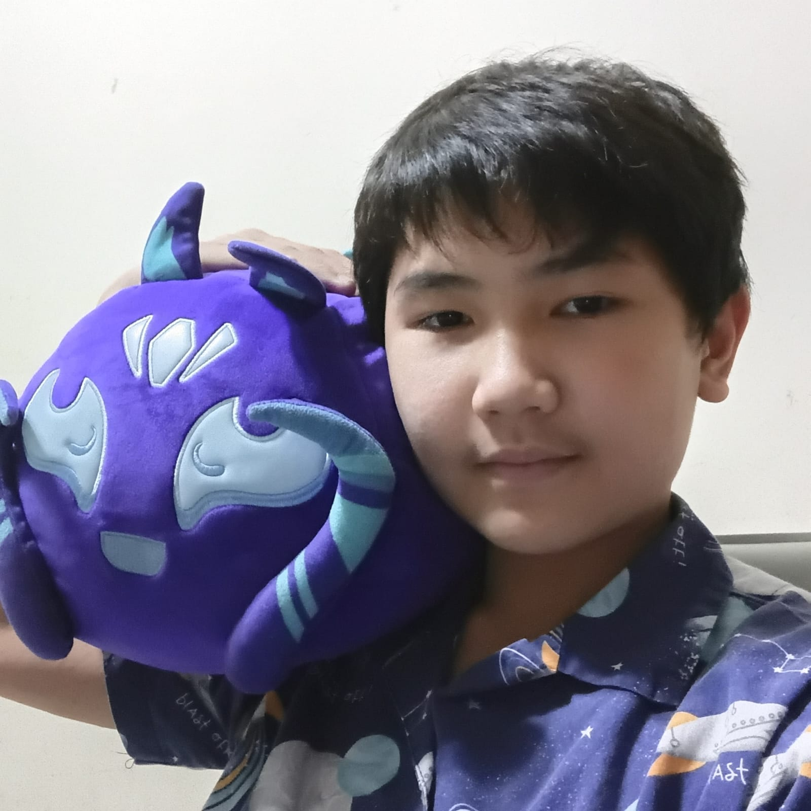

Hello! My name is Axel Haryanto and I am a 7th grade student in SMPK4 PENABUR. As someone who has a great interest in IT and Maths (even Physics), programming is my favorite hobby to do when I'm free. When I think of programming, it always reminds me of a game I would make in my dreams. In this website I'll be talking about myself, my programming journey and other things that have relations with coding! Because well, that's what I enjoy! :D
I've achieved quite a few achievements, mostly during the time when I was still in elementary/primary school (SD).
This is what I have to share:
There's not much other things that I'm interested in, in fact there's only 2!
I might as well state the reasons why I enjoy them!
That's all that I have to talk about myself. To this day I'm still proud on the achievements I've gotten, especially how I got selected for OSN. There's still more to talk about myself, such as how I started programming in the first place. If you're willing to check that, click here.